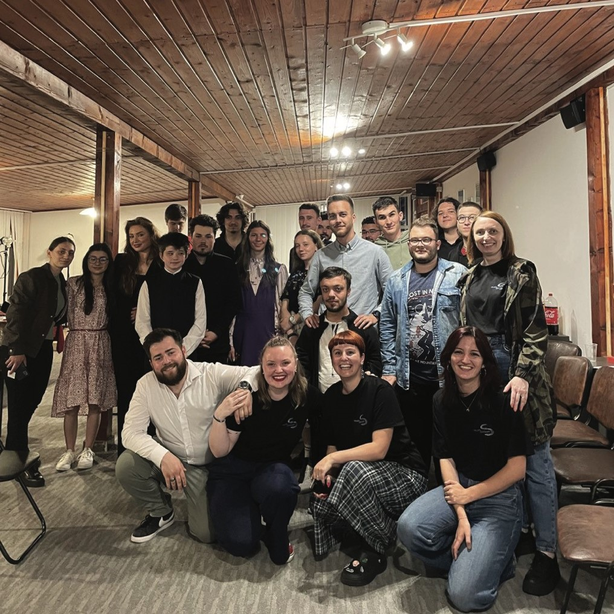

No items found.

Și cu noi cum rǎmâne?
Și cu noi cum rămâne?, întrebare de la care am plecat în demararea primului nostru proiect. Întrebarea a răsărit după observarea faptului că tineretul, ca o componentă extrem de importantă a societății, este lăsat în urmă sau chiar...inexistent în lista de interese a reprezentanților din administrația publică locală. De asemenea, am constatat că informarea, gândirea critică, evaluarea opțiunilor și momentul deciziei nu sunt topicuri de discuție în a educa tinerii. Așadar, am decis să preluăm noi responsabilitatea și să diseminăm informații relevante publicului nostru, în special tinerilor care au votat pentru prima data. Astfel, proiectul s-a desfășurat în contextul alegerilor din data de 9 iunie 2024.
Pe unde am colindat întâlnindu-ne cu tinerii și discutând deschis despre vot (și nu numai)?
Ne-am întâlnit cu tinerii din cadrul a două licee din Sibiu și cu cei din asociațiile studențești, organizând workshop-uri ce aveau două componente: 1. prezentarea informațiilor relevante procesului de alegeri și a responsabilităților celor ce urmau a fi votați într-o manieră informală, împreună cu 2. diseminarea unei analize de nevoi (la care, a propos, am strâns 411 răspunsuri, lucru realizabil doar datorită implicării voastre).
Aceasta conținea întrebări legate de sistemul educațional, domeniul cultural, nivelul de siguranță resimțit privind tinerii care fac parte din minorități, pluuus multe altele.
Raportul realizat în urma interpretării răspunsurilor a fost transmis actorilor din domeniul administrației publice și, ca urmare a întregului demers, am reușit să punem bazele unor consilii consultative de tineret, întâlniri ce se vor desfășura periodic și unde doleanțele noastre vor fi ascultate.
De asemenea, tinerii din companiile și ONG-urile din Sibiu, cât și tinerii din jurul nostru au completat analiza și am ajuns la acest număr 1. relevant statistic și 2. îmbucurător pentru noi, văzând, astfel, o comunitate care, încetul cu încetul, renaște și se leagă.
Încă ceva, ziceam mai sus că întâlnirile aveau două componente. De fapt, era și cea de-a treia, în care discutam deschis cu tinerii, fără nicio structură în minte, și cream o legătură, rezonând cu multe dintre lucrurile spuse.
P.S.: dacă dorești să citești raportul final, ne poți da un mail și noi ți-l vom trimite cu mare drag.
Youth DiVision Sibiu
contactează-ne
e-mail:
contact@ydvsibiu.com
contact@ydvsibiu.com
© Youth DiVsion Sibiu 2024
Website by Nils Ingversen